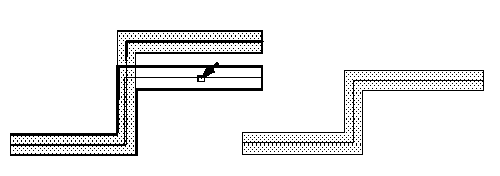

Stretching Paths
You can stretch the ends, segments, and/or corners of a path. You stretch ends and corners in the same way as you stretch any other object. To stretch segments, you need to select the path centerline in the segments you want to stretch.
The resultant of stretching a path should not be malformed or self-intersecting, with overlapping edges. A resultant path with coincident edges (abutted edges) can be manufactured and is allowed.
-
In the layout window, choose Edit – Stretch.
Stretch automatically changes to partial selection mode and prompts you to select the object you want to stretch. -
Select one or more segments by doing one of the following:
-
For a single segment, click the middle of the centerline of the segment or create a selection box around the centerline of the segment, making sure to include the ends of the segment centerline.Highlighting shows the path segment is selected.
-
For multiple segments, to add another segment, press
Shiftand click or create a selection box around the centerline of the segments, making sure to include the ends of the segment centerlines.
-
For a single segment, click the middle of the centerline of the segment or create a selection box around the centerline of the segment, making sure to include the ends of the segment centerline.
- If prompted for a reference point, click on the canvas where you want the stretch to begin.
-
Point to the new location for the stretch and click on the canvas.
-
Press
Escto end the Stretch command.
Related Topics
Return to top